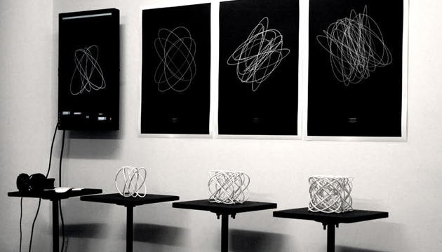
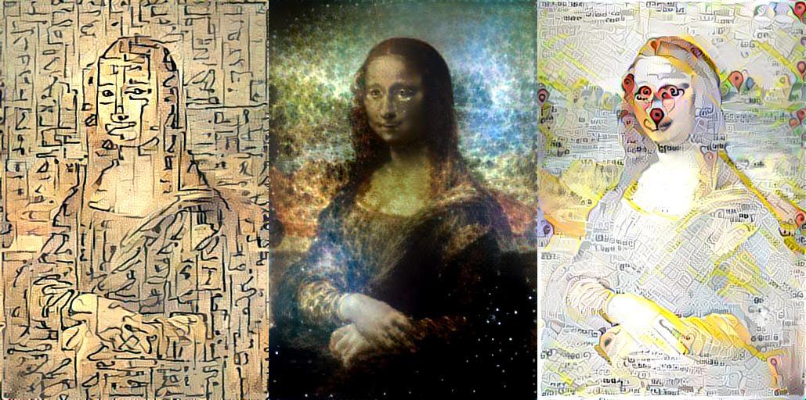
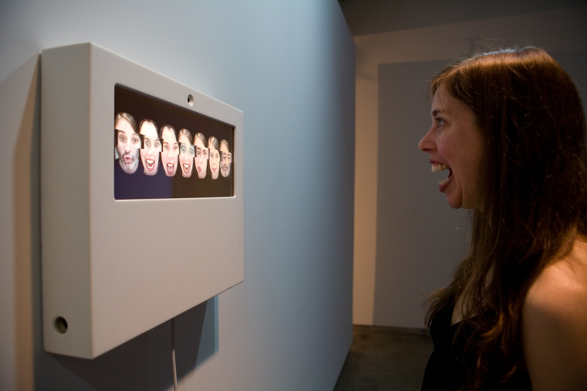

RESPUESTA DE LECTURA
Realizado por: Raúl Vallejo
- LUISA PEREIRA

The Harmonic Series – Santiago de Chile 2016
- Luisa Pereira es una artista, programadora y música establecida en la ciudad de New York. Su trabajo explora la música a través de la codificación y el diseño tomando forma en instalaciones interactivas, en dispositivos, esculturas y grabados. El trabajo de Luisa ha sido presentado en festivales y galerías en New York, São Paulo, Buenos Aires, Londres, Santiago de Chile y Montevideo. Nacida en Brasil. Luisa fue criada en Montevideo, Uruguay. Ella recibió un grado en Ingeniería de Sistemas de la Universidad ORT, donde también enseñó diseño de interacción.
- The Harmonic Series es un proyecto que se basa en el trabajo del matemático Jules Lissajous, quien en el siglo XIX inventó un dispositivo para visualizar las vibraciones del sonido. En este proyecto se cambiaron los diapasones que utilizó el físico francés por parlantes, que conectaron a un micrófono y que les permitió ver, en tiempo real, cómo respondían las figuras al cantar intervalos consonantes y disonantes e incluso al ruido.
- En mi opinión personal el trabajo que realiza Luisa Pereira es impresionante ya que utiliza varias de sus pasiones (la programación y la música) para crear arte y poder mostrar esto con las personas de una manera interactiva y poco común haciendo que la gente se relacione más por la cultura y las ganas de aprender más sobre estos temas. Este proyecto podría incorporarse en escuelas y universidades para que así los estudiantes conozcan más sobre las ondas sonoras.
- GENE KOGAN

Mona Lisa restyled by Egyptian hieroglyphs, the Crab Nebula, and Google Maps.
- Gene Kogan es un artista y programador que está interesado en los sistemas generativos y la aplicación de las nuevas tecnologías en contextos artísticos y expresivos. Él escribe código para música en vivo, performance y para el arte visual. Contribuye a proyectos de software de código abierto y da talleres y demostraciones sobre temas relacionados con el código y el arte.
- Style Transfer es un proyecto elaborado por Gene Kogan que se basa en recomponer la estructura básica de las imágenes al estilo grafico de otra imagen. Este proyecto fue creado usando el código de Justin Johnson's que demuestra un método para re estilizar imágenes usando redes neuronales convulsiónales. En este proyecto se puede evidenciar la utilización de varios tipos de arte que se ha desarrollado a lo largo de la historia para poder efectuar el cambio de estilos entre las imágenes.
- En mi opinión personal este proyecto me llamo mucho la atención porque utiliza cualquier tipo de estilo de imagen para poder darle un nuevo sentido a otra imagen totalmente diferente de esta manera podríamos observar como hubiera sido si una imagen hubiese sido pintada o elaborada por otro artista. Además de la utilización de varios elementos para la creación de arte. Este proyecto se podría utilizar en América Latina para la visualización de las obras más representativas del medio y puedan ser vista desde otra perspectiva sin dañar así las obras originales.
- ZACH LIEBERMAN

Reface [Portrait Sequencer] – 2007
- Zachary Lierberman nacido en 1977 en la ciudad de New York, es un artista con un objetivo simple: impresionar. Su trabajo utiliza la tecnología de una manera única para romper la frágil frontera entre lo visible y lo invisible. El hace que sus proyectos sitúen continuamente al ser humano en la tecnología. Él ayudo a crear los efectos visuales de la fachada del nuevo Museo Ars de Electrónica, escribió el código para un truco de magia en realidad aumentada y ayudo a crear un programa de código abierto de seguimiento del ojo para así poder ayudar a un artista de grafiti paralizado para que pueda volver a dibujar.
- Reface (Secuenciador de Retrato) es un mash-up en video surrealista que compone infinitas combinaciones de los rostros de sus visitantes. Basado en el “Cadaver Exquisito” un juego de salón Victoriano, donde se crean pequeños clips de video en los cuales se recopila la información de bocas, ojos y cejas para crear infinitas combinaciones. Reface utiliza técnicas de reconocimiento facial para permitir la alineación automática y segmentar los rostros de los participantes.
- En mi opinión personal este proyecto llamo mucho mi atención ya que recopila la información que se le proporciona para crear una nueva información donde el usuario que interactúa se siente cómodo usando la interfaz. Además este proyecto hace referencia la identidad de las personas creando así una conciencia de que todos somos seres humanos únicos con diferentes rasgos característicos que nos lleva a la conclusión que todos somos humanos y no debería existir ningún tipo de discriminación en el mundo.
REFERENCIAS:
http://thesystemis.com/
http://www.genekogan.com/
http://www.luisaph.com/
http://www.flong.com/projects/reface/
http://www.theharmonicseries.net/
http://www.genekogan.com/works/style-transfer.html